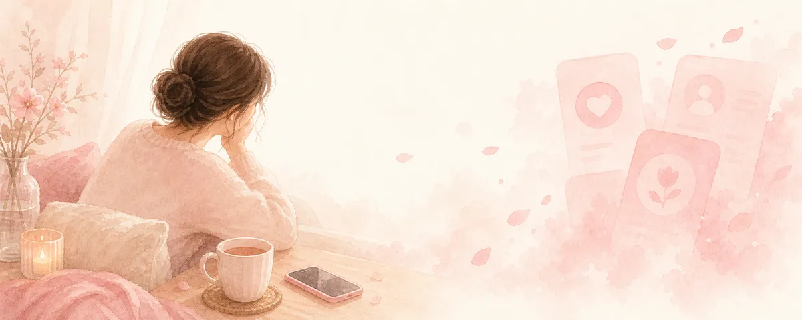

マッチングアプリに疲れた・うまくいかないとき｜立て直す考え方

いいねは来るのに会えない、会っても続かない、毎日のやりとりに疲れてしまった——。マッチングアプリ疲れは、頑張っている人ほど起こります。少し肩の力を抜いて、立て直し方を一緒に見ていきましょう。
まず、疲れている自分をねぎらう
知らない人と何度もやりとりし、期待しては落ち込む。これはかなりエネルギーを使う活動です。うまくいかないのはあなたの魅力の問題ではなく、そもそも消耗しやすい仕組みの中で頑張っているから。まずは「よくやっている」と自分をねぎらってください。
「数」より「消耗しない使い方」に切り替える
たくさんやりとりするほど疲れます。同時進行を減らす、返信は自分のペースでいい、と決めるだけでも負担は下がります。アプリに振り回されるのではなく、自分の生活の片隅で無理なく使うくらいの距離感が、結局は長続きします。
プロフィールは「盛る」より「らしさが伝わる」
経歴や年収を実際より良く見せたくなることもありますが、虚偽は後で苦しくなり、信頼も損ないます。大切なのは背伸びではなく、あなたらしさが伝わる言葉。どんな時間を大事にしたいか、どんな関係を望むか。等身大の魅力が伝わるほど、合う人と出会いやすくなります。
メッセージの間合い：追いすぎない
返信が遅いと不安になり、つい連投したくなります。でも、返事のペースは相手の都合でもあります。連絡は自分から一度、あとは相手の返答を尊重する。この間合いが、重く見られず、対等な関係をつくります。返ってこなければ「合わなかっただけ」と切り替える軽さも、自分を守ります。
会う前の「安全」は必ず確認する
実際に会うときは、安全対策を欠かさないでください。初対面は人通りの多い昼間の場所を選ぶ、場所は事前に自分でも決める、会うことを誰かに伝えておく。お金の話（投資・送金を「今だけ」と急かす等）が出たら、その場で応じず、いったん持ち帰る。配慮を強く嫌がる・急かす相手の反応も、ひとつの判断材料です。
疲れたら、いったん休んでいい
うまくいかない時期が続くと、自分を否定しがちです。けれど、休むのは後退ではありません。少し離れて、自分の生活や気持ちを整えてから戻っても遅くない。恋愛は競争ではなく、あなたのペースで進めていいものです。
「何がいけないのか分からない」「もう疲れた」——そんなときこそ、現実的な目線で一緒に棚卸ししましょう。
元キャバ嬢の視点で、あなたに合うやり方を考えます。
※本記事は一般的な情報提供です。出会いの結果を保証するものではありません。金銭被害・犯罪が疑われる場合は、消費者ホットライン「188」や警察相談「#9110」など公的窓口にご相談ください。
← トップへ戻る